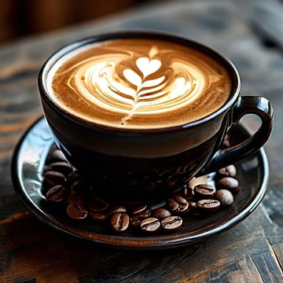
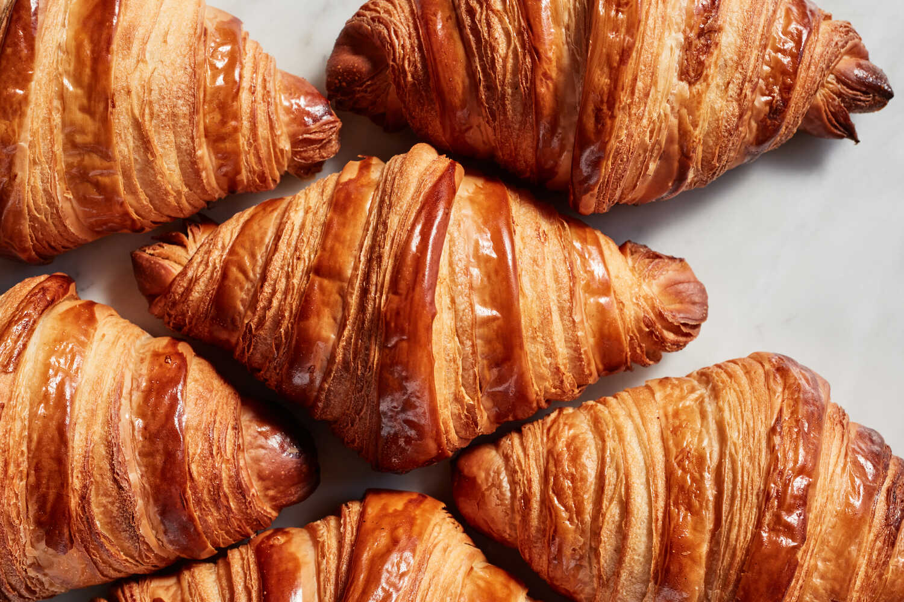

Our Gallery
Take a look inside Bean & Bite Bakery and discover our handcrafted products, welcoming café atmosphere and the people who make our community special.
Photo Gallery



Behind the Scenes
Discover the care and craftsmanship that goes into every product at Bean & Bite Bakery.


Customer Moments
Bean & Bite Bakery is a place where customers can enjoy great food, specialty coffee and meaningful moments with friends, family and the local community.


Bakery Interior
Our bakery combines the character of a historic brick building with a warm, modern and comfortable café environment designed for local families and remote workers.